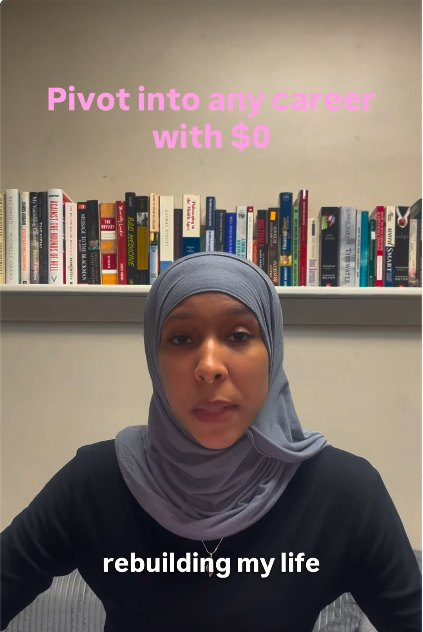

"Pivot into any career with $0"
Building From Scratch · Reach968Views, 2 platforms
61%IG non-followers
13Saves
12Shares
- The goal
- Test whether practical career content could reach women who didn't know me yet. It's the first post in my Building From Scratch pillar, and the story I'm living: rebuilding a career with no budget.
- The build
- The payoff sits on screen from frame 1 in brand pink. I spoke straight to camera with burned-in captions and gave a five-step framework: pick a direction, learn for free and apply it, turn it into a portfolio, become visible, and let roles come to you.
- The result
- My top TikTok: 562 views, 42 likes, 11 saves and 8 shares, posted when that account had 10 followers. On Instagram it was my #2 post of the month, and 61.3% of its 406 views came from people who didn't follow me.
- What I learned
- The idea is strong, and the delivery can go further. The steps lived in the voiceover instead of an on-screen list, so Instagram viewers had little reason to save it (2 saves, compared with 11 on TikTok). Practical, career-focused, "from scratch" content is my clearest growth signal so far, and a plain talk to camera was my top video on both apps.
- What I changed
- It became the anchor for my Building From Scratch pillar and a planned series ("Pivot, part 2: the free certs I used"). Every list-based Reel now shows its steps on screen, so it's worth saving.
Sometimes you have to pivot with $0. I'm a 25yr mom starting over and building my career again. Learn from my mistakes and find your path to career and freedom faster…